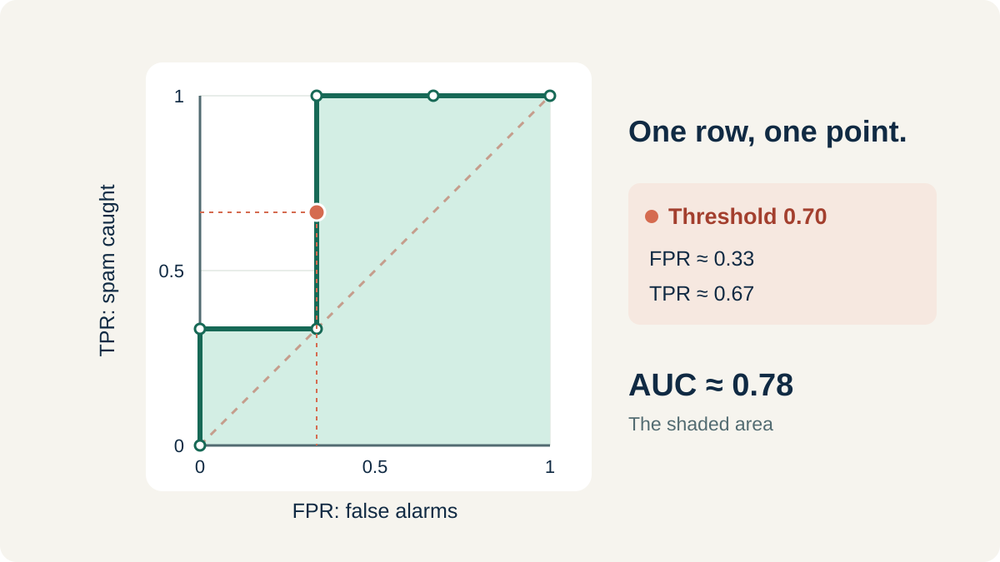

Start with a confusion matrix
Think of a spam filter. Here, positive means spam and negative means not spam. A confusion matrix counts which predictions were right and which were wrong.
| Actually spam | Actually not spam | |
|---|---|---|
| Predicted spam | TP: spam caught | FP: false alarm |
| Predicted not spam | FN: spam missed | TN: correctly left alone |
- TPR / sensitivity: how much of the actual spam did we catch?
- FPR: how much of the non-spam did we wrongly mark as spam?
- Specificity: how much of the non-spam did we correctly leave alone?
Change the threshold
Now lower the threshold to 0.60. Email D becomes a spam prediction too. D really is spam, so TP rises from 2 to 3, and FN falls from 1 to 0. We now catch all the spam: TPR becomes 1.00. The false alarm count stays the same.
To see every possible change, start at 1.00, above all six probabilities, then lower the threshold to each probability in the first table. The model's probabilities stay the same; only the cutoff changes.
| Threshold | TP | FP | FN | TN | FPR | TPR |
|---|---|---|---|---|---|---|
| 1.00 | 0 | 0 | 3 | 3 | 0.00 | 0.00 |
| 0.90 | 1 | 0 | 2 | 3 | 0.00 | 0.33 |
| 0.80 | 1 | 1 | 2 | 2 | 0.33 | 0.33 |
| 0.70 | 2 | 1 | 1 | 2 | 0.33 | 0.67 |
| 0.60 | 3 | 1 | 0 | 2 | 0.33 | 1.00 |
| 0.40 | 3 | 2 | 0 | 1 | 0.67 | 1.00 |
| 0.20 | 3 | 3 | 0 | 0 | 1.00 | 1.00 |
Each row counts all six emails again. The green row is our original threshold of 0.70. Rates are rounded to two decimal places.
Draw the ROC curve
ROC stands for receiver operating characteristic. It shows how catching more spam can also create more false alarms.
- Put FPR along the bottom and TPR up the side.
- For each threshold row, draw one point using its FPR and TPR.
- Connect the points in table order.
At threshold 0.70, the point is about (0.33, 0.67). At 0.60, it moves up to (0.33, 1.00): we catch more spam without adding a false alarm. At 0.40, it moves right to (0.67, 1.00): E becomes another false alarm.

Calculate the area under the curve
AUC is the size of the shaded area under the ROC curve. For this step-shaped curve, split the shaded area into rectangles and add their areas. For sloping segments, use trapezoids instead.
Both axes go from 0 to 1, so the whole square has an area of 1. Our curve covers about 78% of that square, giving an AUC of about 0.78.
Interpret ROC–AUC
AUC tells us how well a model can tell the two classes apart. It ranges from 0 to 1. A higher value means the model is better at giving positive cases higher scores than negative cases.
- 1.0: perfect separation. Every positive case gets a higher score than every negative case.
- Between 0.5 and 1.0: better than random guessing. Closer to 1 means better separation.
- 0.5: no better than random guessing at putting positives above negatives.
- Below 0.5: the model tends to give higher scores to the wrong class.
AUC is not the percentage of correct predictions. It summarizes how well the model orders the two classes across thresholds.
You still need to choose a threshold to turn scores into predictions. That choice depends on which mistake matters more: missing a positive case or raising a false alarm.
Change the threshold → get new counts → calculate TPR and FPR → plot one ROC point. AUC measures the area under the finished curve.